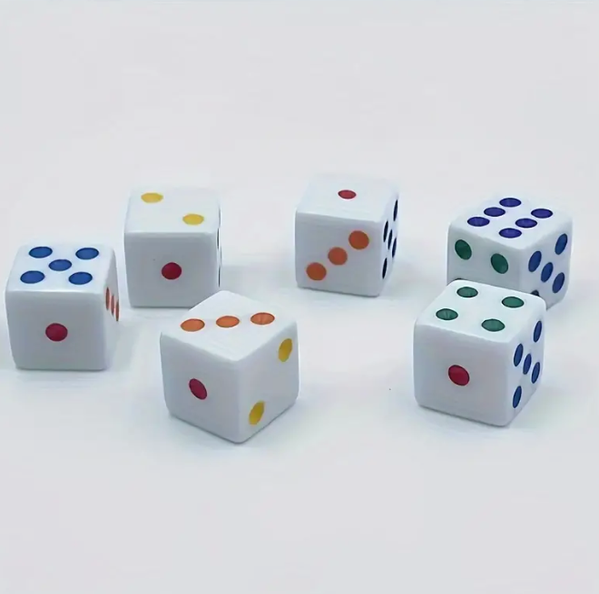

Bethel Yohannes
Business Systems Development Student
Cell: 343-297-0257 | Email: yoha0014@algonquinlive.com
About Me

Hello! I'm Bethel Yohannes, a student passionate about technology and development. I’m always eager to learn new skills, take on challenges, and work on projects that allow me to grow both personally and professionally. My interests include software development, web design, and exploring innovative solutions that make a difference. I am fluent in English, French, and Amharic, and I thrive in diverse and collaborative environments. I look forward to bringing my skills, creativity, and determination to meaningful projects.
Skills Summary
Technical Skills
- SQL & PLSQL: Developed database queries for data retrieval and analysis.
- JavaScript: Created dynamic web elements to enhance user experience.
- Python: Built scripts for data analysis and workflow automation.
- CSS and HTML: Designed responsive web pages for cross-platform use.
Soft Skills
- Communication: Collaborated effectively on projects and presented technical concepts.
- Problem Solving: Overcame coding challenges and created functional applications.
- Time Management: Delivered projects on time while balancing multiple tasks.
- Adaptability: Learned new tools and languages quickly, demonstrating versatility.
- Teamwork: Worked collaboratively, contributing knowledge and insights.
Projects
Yatzy Game
This project is a single-player Yatzy game developed using HTML, CSS, and JavaScript. It includes game rules, scoring, a user-friendly interface, and responsive design for a seamless experience. The game is thoroughly tested to ensure smooth gameplay and accurate scoring.
Project Title 2
Project description goes here. This was a collaborative project aimed at solving a real-world problem through innovative software solutions.

Yatzy Game - Technical Documentation
The Yatzy Game was built using a combination of HTML, CSS, and JavaScript. The project focuses on responsive design, interactive gameplay, and user-friendly scoring. Key technical details include:
- HTML & CSS: Structured layout with responsive styling, ensuring usability across different screen sizes.
- JavaScript: Core game logic, including dice rolling, score calculation, and game state management.
- DOM Manipulation: Dynamic updates to the game display based on player actions and game state changes.
- Event Handling: Click events for rolling dice, selecting scores, and resetting the game for a seamless experience.
This project demonstrates technical skills in JavaScript programming, responsive web design, and creating a fully interactive user interface.
Additional Skills and Technologies
Throughout this course, I have developed skills in various technologies and best practices, including:
- Database Management: Proficient in SQL and PLSQL for data retrieval, query optimization, and database design.
- API Integration: Understanding of RESTful APIs and methods for connecting front-end applications with back-end services.
- UI/UX Design Principles: Knowledge of design principles to create intuitive, accessible, and user-friendly interfaces.
- Version Control: Experience with Git and GitHub for code management and collaboration.
Contact
If you’d like to get in touch, feel free to reach out via email.
yoha0014@algonquinlive.com